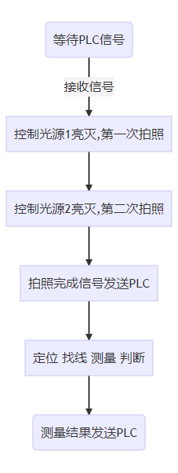

本项目主要测量工件边框到基准边距离及边框平行度。
项目分为两个工位进行检测，分别测量母座正面及背面的尺寸，各工位检测内容如下：
工位1共测量4个距离，其中距离2可分为距离2_1、距离2_2和距离2_3，距离4为两条边的平行度，具体介绍如下:
（1）下图中，紫色直线为距离1
（2）下图中，紫色直线为距离2，共分为三段距离，分别取线段的两个端点以及中点到另一边的距离，从上到下分别为距离2_1、距离2_2和距离2_3。

（3）下图中，紫色直线所示的为距离3。

（4）下图中，紫色直线所示的为距离4，为两条边的平行度，通过计算一条边的两个点到另一条边的距离的差值来作为平行度的评价标准。

工位2共测量3个距离，其中距离2为两条边的平行度，具体介绍如下:
（1）下图中，紫色直线为距离1。

（2）下图中，紫色直线为距离2，为两条边的平行度，通过计算一条边的两个点到另一条边的距离的差值来作为平行度的评价标准。

（3）下图中，紫色直线为距离3。

两个工位测量步骤大体相似，其中工位1第一次拍照拍摄背景光图像，第二次拍照拍摄前景光图像，工位2第一次拍照拍摄前景光图像，第二次拍照拍摄背景光图像，流程如下：

如下图所示，采用两个并行分支同时处理前景光图像（图片2）和背景光图像（图片1）；其中背景光图像主要用来查找距离1边框线，前景光图像用来查找基准线、距离2/3/4边框线。

对4个相关距离计算如下图所示，使用并行处理方式。


如下图所示，采用两个并行分支同时处理前景光图像（图片1）和背景光图像（图片2）；其中钱景光图像主要用来查找距离1/2/3边框线，背景光图像用来查找距离1/2/3的两条基准线。

对3个相关距离计算如下图所示，使用并行处理方式。


生产界面运行结果如下图所示。